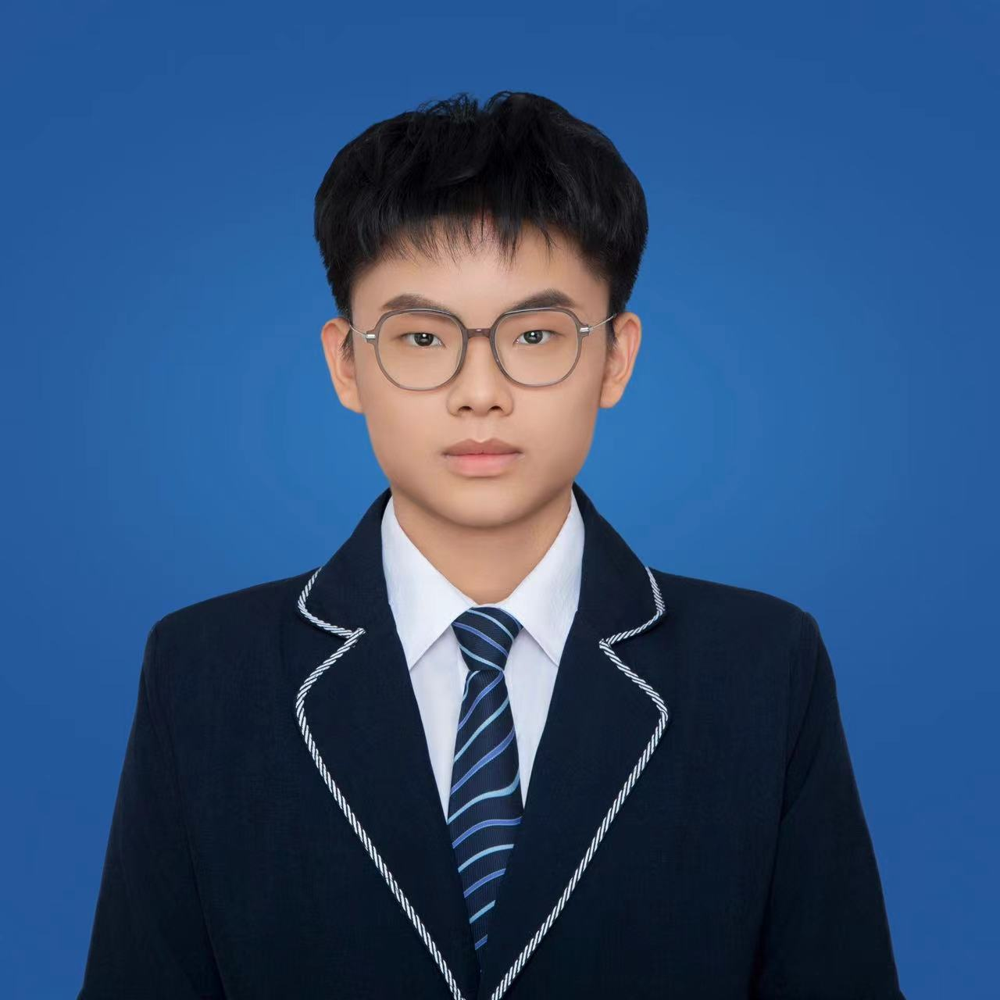

| 姓名 | 薛景文 | 性别 | 男 | 年龄 | 18 |  | |
| 籍贯 | 山东临沂 | 联系电话 | 18660944866 | 电子邮箱 | 1635214718@qq.com | ||
| 学历 | 本科 | 健康状况 | 正常 | 婚姻状况 | 未婚 | ||
| 求职意向 | 专业 | 软件工程 | |||||
| 技能证书 | 全能 | 毕业院校 | 鲁东大学 | ||||
| 个人特长与爱好 | 学习 | ||||||
| 项目经历 | |||||||
| 自我评价 |
本人具备扎实的专业知识基础，通过系统学习软件工程相关课程，掌握了编程、算法设计等专业技能。在学习过程中，我始终保持积极主动的态度，不断探索和钻研前沿技术，深入理解软件开发的流程和规范。 在实践方面，我积极参与校内软件项目开发，曾负责校园管理系统的前端界面设计与部分功能实现。通过这个项目，我不仅提高了自己的编程实践能力，还学会了如何与团队成员有效沟通和协作，共同解决项目中遇到的技术难题。 在个人品质方面，我具有较强的责任心和团队合作精神。对待工作认真负责，注重细节，能够确保代码的高质量和项目的稳定性。同时，我善于与他人合作，能够充分发挥团队的优势，共同实现项目目标。此外，我还具备较强的学习能力和适应能力，能够快速掌握新知识和新技能，适应不同的软件开发环境和需求。 未来，我希望能够在软件开发领域继续发展，不断提升自己的专业能力和综合素质。我相信，凭借自己的努力和团队的支持，我能够为公司的软件项目开发做出积极贡献。 |
||||||